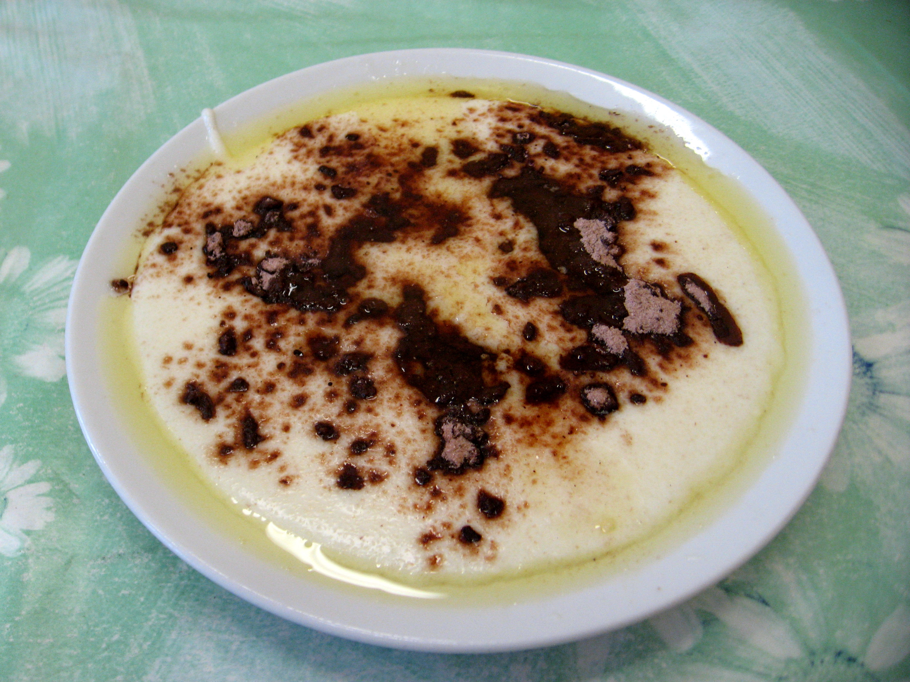

Semolina Porridge

Description
Semolina porridge is the best way to let your nose taste buds experience
nostalgia of your grandma's home.
Sweet flavor of semoline porridge, that you felt when you were visiting
your grandma is unforgettable
Ingredients
- 1L of milk
- 150g of semolina
- 5tsp of sugar
- pinch of salt
Steps:
- Pour 1L of milk into pot
- Put semolina into pot
- Stirr up semolina with milk on heat
- Put sugar into pot
- Put pinch of salt into pot
- Stirr everything up on the heat until its thick enough